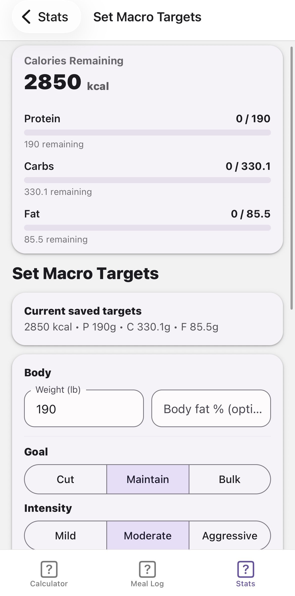
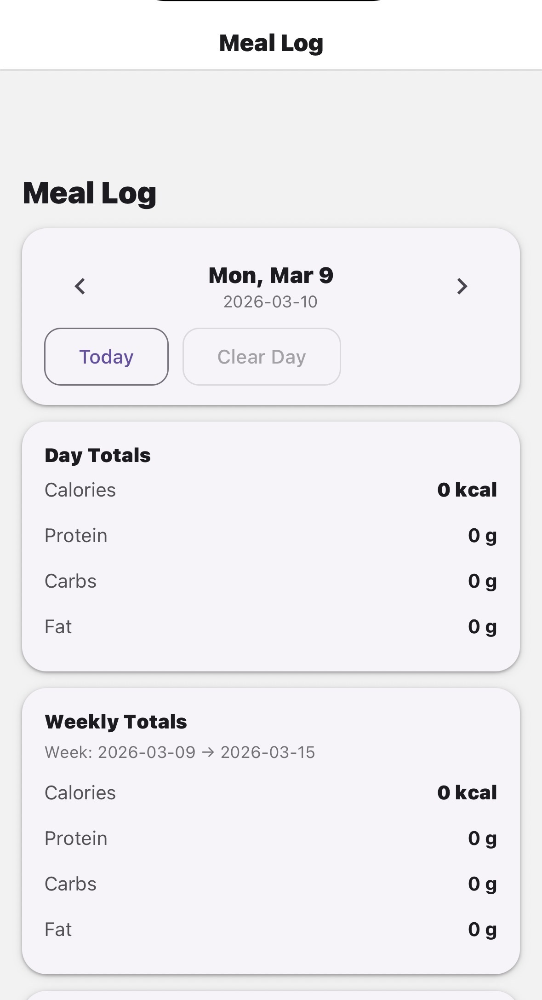
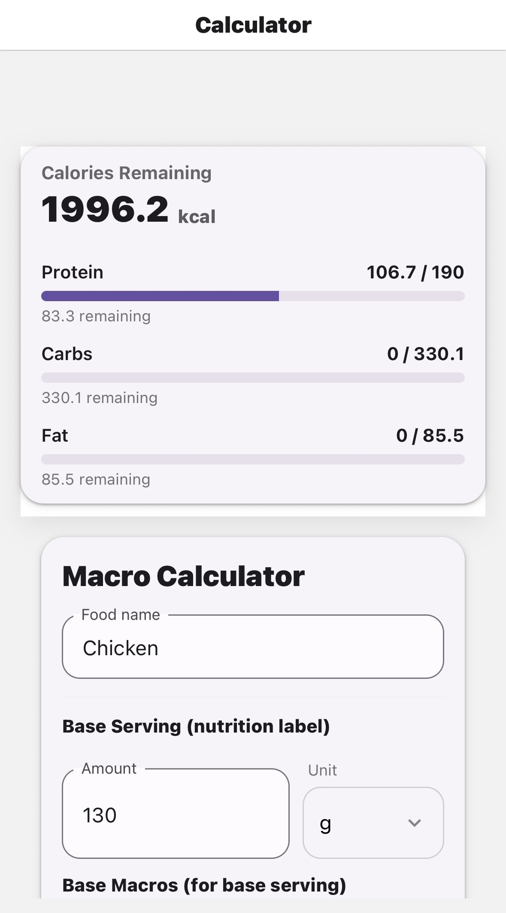

Macro Nutrition Tracker
This project is a nutrition tracking application designed to help users monitor calories, protein, carbohydrates, and fats through a simple and clear interface. The goal of the project was to create a practical tool that helps users maintain awareness of their nutrition while supporting different fitness goals such as cutting, maintaining, or bulking.
Project Intent
The main goal was to design a system that allows users to quickly log meals, monitor macro progress, and adjust nutrition targets based on their body composition and fitness goals.
The interface prioritizes clarity and immediate feedback so users can see their nutritional progress throughout the day.
Features
- Macro calculator for foods
- Daily macro tracking
- Weekly nutrition summaries
- Goal-based macro targets
- Calorie progress bars
- Meal logging system
Interface Screens



Design Focus
The interface was designed around card layouts and progress indicators to make nutritional information easy to read at a glance.
Each screen focuses on one core action:
- Calculator → determine food macros
- Meal Log → track daily intake
- Stats → review progress
What I Learned
- How to structure application screens around clear user goals.
- How to design interfaces that communicate numerical progress visually.
- How to organize reusable components such as cards and progress bars.
- How to design state-driven interfaces where values update dynamically based on user input.